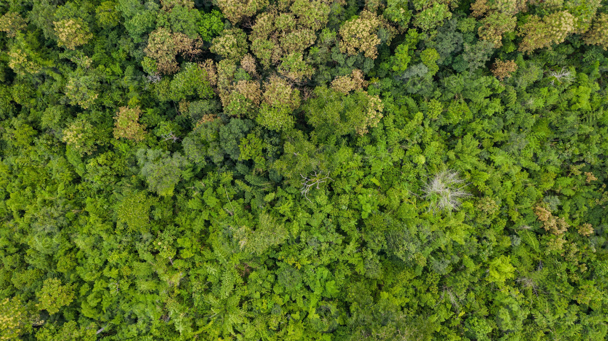
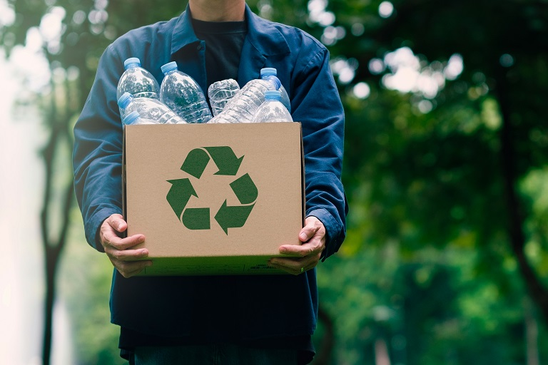
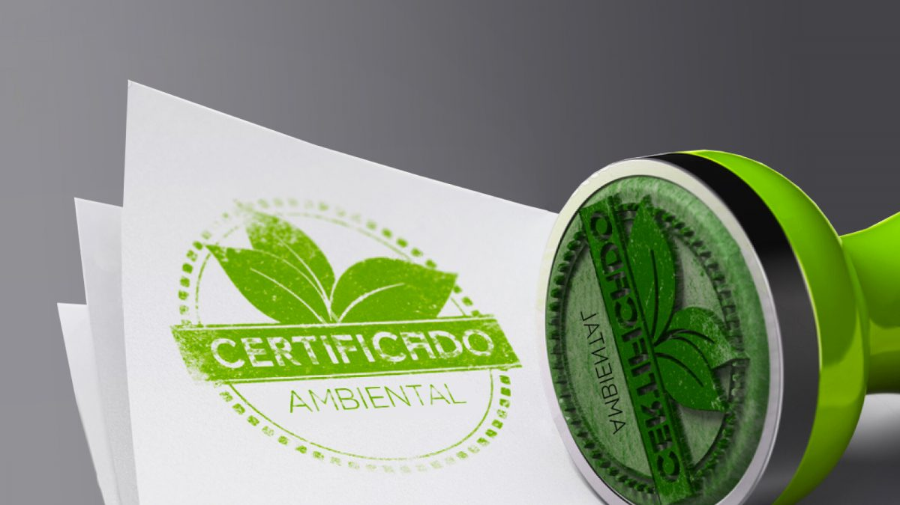

Nossa especialidade: Reflorestamento Voluntário
Clique no card do serviço que você se interessar para mais detalhes!
Gestão de Riscos
Eficiência do Trabalho
Fornecimento & Parcerias Sustentáveis
Reciclagem de Resíduos
Formação em Treinamentos e Workshops
Preparação a Certificados Internacionais

Reflorestamento Voluntário
A WorkTrees organiza programas de reflorestamento voluntário, conectando pessoas e empresas à preservação de áreas verdes. Com planejamento estratégico, cada plantio é realizado de forma responsável, respeitando o ecossistema local e garantindo o crescimento saudável das árvores. Além do impacto ambiental positivo, os participantes vivenciam uma experiência educativa e transformadora, aprendendo sobre biodiversidade, conservação e a importância de cada ação na manutenção do equilíbrio ambiental.
Quero esse!Gestão de Riscos
A WorkTrees oferece consultoria especializada em gestão de riscos ambientais, ajudando empresas a identificar e mitigar impactos ecológicos. Com análises detalhadas e planejamento estratégico, os projetos minimizam possíveis danos e promovem práticas mais seguras e sustentáveis. Ao aplicar essas soluções, organizações conseguem operar com maior confiança e responsabilidade, garantindo conformidade regulatória e fortalecendo a imagem corporativa perante clientes e comunidades.
Quero esse!Eficiência do Trabalho
A WorkTrees auxilia empresas a otimizar processos internos com foco na sustentabilidade e produtividade. Estratégias personalizadas ajudam a reduzir desperdícios, economizar recursos e implementar práticas de trabalho mais inteligentes. Ao integrar eficiência operacional com consciência ambiental, as organizações aumentam a performance de suas equipes e promovem um ambiente de trabalho mais saudável e sustentável.
Quero esse!Fornecimento e Parcerias Sustentáveis
A WorkTrees conecta empresas a fornecedores comprometidos com práticas sustentáveis e éticas, garantindo que cada produto ou serviço adquirido tenha responsabilidade ambiental e social. Por meio dessas parcerias, organizações conseguem fortalecer cadeias de suprimentos verdes, reduzir impactos negativos e apoiar iniciativas que promovem um futuro mais consciente e equilibrado.
Quero esse!
Reciclagem de Resíduos
A WorkTrees desenvolve programas de reciclagem de resíduos voltados para empresas, comunidades e eventos. Com coleta seletiva, triagem e destinação correta, cada material recebe tratamento adequado para reintegração à cadeia produtiva. Além de reduzir a poluição, esses programas geram conscientização e engajamento, mostrando como pequenas ações podem transformar o lixo em recursos e contribuir para a economia circular.
Quero esse!
Treinamentos e Workshops
A WorkTrees oferece treinamentos e workshops focados em sustentabilidade, práticas ecológicas e responsabilidade socioambiental. As sessões são práticas, educativas e adaptadas para empresas, escolas e comunidades. Participantes aprendem técnicas aplicáveis no dia a dia, desde redução de desperdício até implementação de projetos verdes, fortalecendo uma cultura de consciência ambiental e ação transformadora.
Quero esse!
Preparação para Certificados Internacionais
A WorkTrees ajuda organizações a se prepararem para certificações ambientais e de sustentabilidade reconhecidas internacionalmente. O suporte inclui análise de processos, documentação necessária e implementação de práticas alinhadas às exigências dos selos. Com essa preparação, empresas demonstram compromisso real com o meio ambiente, fortalecem sua reputação global e conquistam credibilidade junto a clientes, investidores e parceiros.
Quero esse!